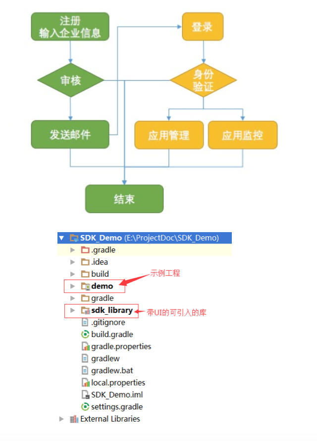
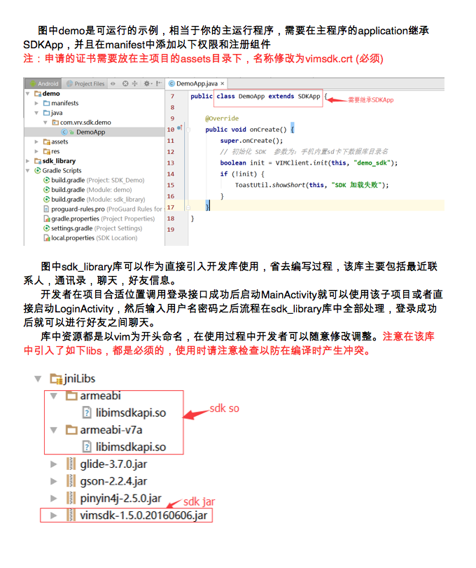
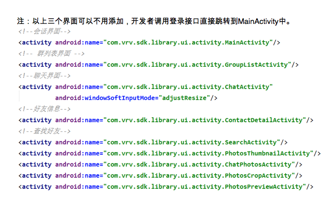
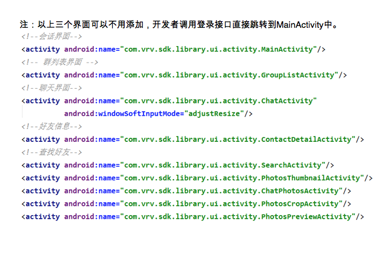

Android客户端集成
SDK集成开发准备
- 前往应用证书申请地址: http://www.linkdood.cn/server-linkdood/reg，申请开发所必须的证书（证书使用详见后面说明）
- 证书会在管理员审核信息通过并后发送给开发者
- SDK相关资源从我们的开发者中心可以下载到。包括SDK库文件、VIMSDKDemo以及相关集成文档和API文档。
- 下载地址:http://blog.liandoudou.cn/doku.php?id=wiki:sdk
- 本文详细介绍关于VIMSDKDemo相关说明（android studio开发环境）
- 项目结构如下图：


 

其他相关接口的调用请参看DEMO功能实现以及相关API文档